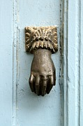
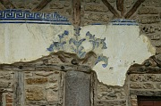
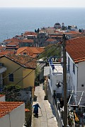

Disclaimer: These pages are not actively maintained, and some of the practical information on the site is out of date. I am working on a new version of the site that will focus more on my photos and memories of travel in Southeast Europe, and less on practical details that too easily become obsolete. In the meantime, please treat the information here with caution.

Varosi, Edessa
The Province of Macedonia
The northern province of Macedonia, along with neighbouring Thrace, stands somewhat apart from the rest of Greece. Its landscape, climate, and history combine to produce an atmosphere that shares as much with the Balkan as with the Mediterranean world. There are more grey skies here than in the typical postcard image of Greece, but there is no lack of colour: in the frescoes of mediaeval churches, the painted facades of old Ottoman houses, or the black-and-yellow Byzantine flag that flutters outside many churches and public buildings.
The province is the southern part of the historic area known as Macedonia. It is bordered to the north by the Republic of Macedonia (FYROM), which has its own pages in this site. Thessaloniki, the capital of the province, is also described in a separate page.
Edessa
Edessa is situated on the edge of a plateau, with the Macedonian plain spreading out below it to the east. It is famous for its waterfalls (katarraktes), formed by a river plunging over the edge of the plateau. A park surrounds the top of the waterfalls, making it a very pleasant spot but also somewhat taming the grandeur of the cascades. Water is a constant presence in the rest of the town too, with lots of fountains and small canals.
The most attractive part of Edessa is the Varosi quarter, a small and quite unspoiled area of cobbled streets and mainly 19th-century buildings. It's possible to get some idea here of what must have been lost in the destruction of the much larger Ottoman districts of Thessaloniki. The Folkore Museum is in a more modern building that blends in nicely with its surroundings.
In the plain below the town is a small ancient site consisting of some foundations and a few fallen columns, as well as a large monastery. Both are easy to pick out from one of the viewpoints in the Varosi quarter. You can also get to the foot of the waterfalls, but you probably don't want to - when I visited I found an unattractive mess of concrete and litter.
Between Thessaloniki and Edessa, rather unfortunately located beside a busy main road, is the ancient site of Pella, the birthplace of Alexander the Great. The site is noted for its well-preserved mosaics of naturally coloured stones.
Barbouta, Veria

Veria Cathedral
Veria and Vergina
Veria is a fairly large town that you are likely to pass through if you visit Vergina. In contrast to Edessa, it doesn't do much to promote its own tourist sights: there are signs pointing to the rather garish Altar of St Paul, but not much else. Nevertheless it is a fascinating place to explore. There is are over 70 churches, a rather squat cathedral, a couple of mosques, a huge plane tree, a small archaeological museum, views over the Macedonian plain, and some charming houses from the Ottoman era, especially in the Jewish Barbouta quarter. As in Edessa these houses are in various stages of decay or restoration, but Veria has a more extensive collection and it's possible to spend quite a while wandering the cobbled streets and picking out attractive touches of decoration.
Vergina, 11km from Veria, is the site of Aigai, the first capital of Macedonia. Some palace ruins are visible, but the main attraction is the burial mound containing the Royal Tombs. The interior of the tumulus has been turned into a museum, in which it is possible to peer through glass at the doors of four tombs, including that of Phillip II. There is also an extensive collection of royal bling. Although the displays are impressive, I felt that the museum was rather generic and didn't really take full advantage of being on the actual site of the tombs.
Kavala Harbour

Panagia, Kavala
Kavala
Kavala is a likeable city, its steep hills curving gracefully around its busy harbour. The most obvious landmark is the Byzantine fortress at the highest point of the peninsula that shelters the port. From its ramparts there are excellent views of the city. Immediately below the castle is the Panagia quarter, in which quite a few Ottoman houses have survived. One of the best-preserved is the house of Mehmet Ali, a local boy who went on to become Pasha of Egypt. The house is easily identified by the statue of Ali on horseback just outside. Ali is also connected to another of Kavala's most notable buildings, the graceful 18-domed Imaret, founded by Ali in 1817 as a theological seminary. The seminarians could hardly have imagined that their quarters would one day house the guests of a forbiddingly exclusive hotel. Just to the north of Panagia is an aqueduct (kamares), another survivor from Ottoman times.
Other places in Macedonia
There is more to the province than history: Macedonia also boasts a wealth of natural attractions. The weather during my visit wasn't really suited to outdoor exploration, but your timing may be better. The best known natural attraction is Mount Olympus, the highest mountain in Greece, and a favourite with hikers. The remote Prespa Lakes, near the borders with Albania and the Republic of Macedonia, are said to be very beautiful. The best-known beaches in the province are on the Halkidiki Peninsula.
Practicalities
Veria, Edessa, and Kavala can all be visited either as excursions from Thessaloniki or as overnight stays, although Veria has a relatively limited choice of accommodation.
Public transport transport to the towns described on this page is quite straightforward. Frequent buses to Veria leave from Thessaloniki's main KTEL terminal (1.5 hours). There are also trains on this route, but Veria's station is some distance from the centre. Vergina can be reached by local bus from Veria. Although there are quite a few daily buses there are some long gaps in the schedule, so it's best to get there reasonably early in the day - especially if you are visiting in winter when the site closes at 3pm.
There are hourly buses from Thessaloniki to Edessa, taking a little under two hours. The train is a good option on this route - Edessa's train station is conveniently located, and the train trip avoids some of the depressing ribbon development on the road west from Thessaloniki. There are buses from Edessa to Veria, so you could visit both in a day - but probably not if you want to see Vergina as well. There are 2 buses per hour from Thessaloniki to Pella (40 minutes) - they will drop you on the main road right outside the site.
Kavala is a long way from any railway, but there are buses every hour or two from Thessaloniki's KTEL station, taking 2-2.5 hours.
More photos of the Province of Macedonia in my Greece Galleries